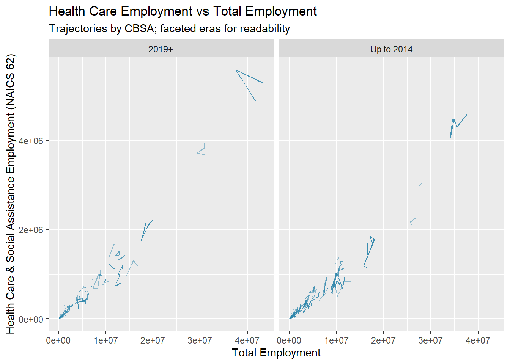
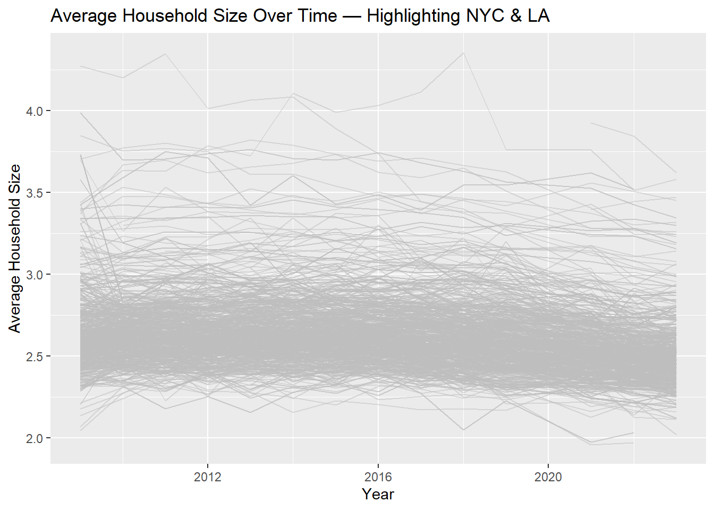
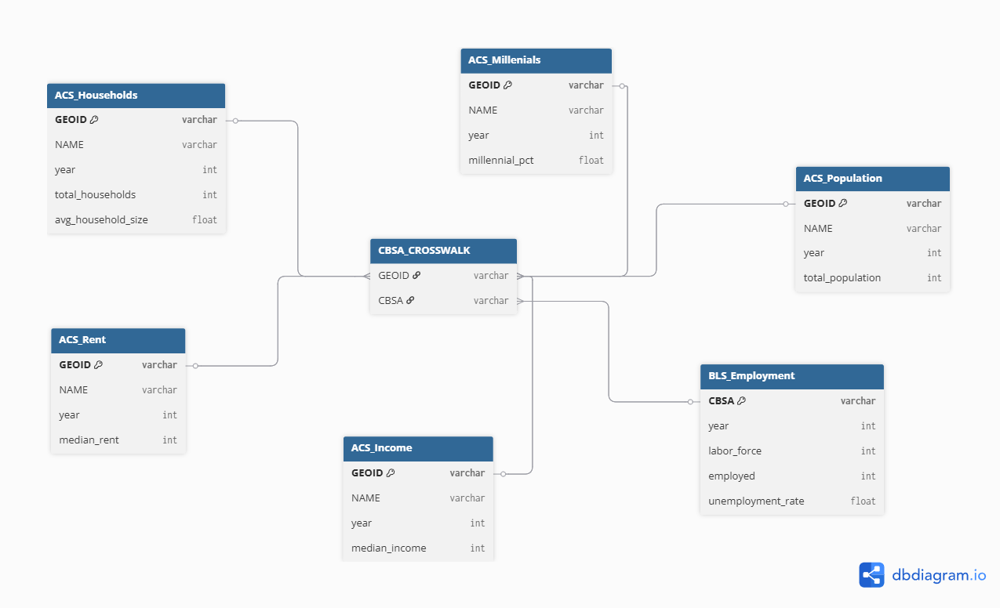

Making Backyards Affordable for All: A YIMBY Data Analysis
Introduction and Research Questions
This mini-project identifies the most “YIMBY” CBSAs by building two evidence-based metrics from ACS and BLS data: - Rent Burden Index (RBI): how much income a typical resident spends on rent (with intuitive re-scaling). - Housing Growth Index (HGI): permitting performance relative to both population size (instantaneous) and 5-year population growth (rate-based), then combined.
I will:
Ingest instructor-provided ACS & BLS/QCEW data (Task 1);
Perform multi-table analysis (Task 2) and basic visualizations (Task 3);
Build and present RBI (Task 4) and HGI (Task 5);
Relate RBI and HGI to flag “YIMBY success” (Task 6);
New York-Northern New Jersey-Long Island, NY-NJ-PA Metro Area
446,020
New York-Newark-Jersey City, NY-NJ-PA Metro Area
446,020
New York-Newark-Jersey City, NY-NJ Metro Area
446,020
Atlanta-Sandy Springs-Marietta, GA Metro Area
254,377
Atlanta-Sandy Springs-Roswell, GA Metro Area
254,377
Atlanta-Sandy Springs-Alpharetta, GA Metro Area
254,377
Washington-Arlington-Alexandria, DC-VA-MD-WV Metro Area
232,483
Phoenix-Mesa-Scottsdale, AZ Metro Area
219,939
Phoenix-Mesa-Glendale, AZ Metro Area
219,939
Phoenix-Mesa-Chandler, AZ Metro Area
219,939
Seattle-Tacoma-Bellevue, WA Metro Area
213,022
Click to View Code
# Q1 result – top CBSA by permits (2010–2019)q1_name <- permits_decade$NAME[1]q1_value <- permits_decade$permits_10s[1]cat(paste0("**1)** The CBSA with the most new housing permits from 2010–2019 is **",q1_name, "** with **", format(q1_value, big.mark =","), "** permits.\n\n"))
**1)** The CBSA with the most new housing permits from 2010–2019 is **Houston-Sugar Land-Baytown, TX Metro Area** with **482,075** permits.
2- In what year did Albuquerque, NM (CBSA Number 10740) permit the most new housing units?
# Q2 result – Albuquerque peak permits year & valueq2_year <- abq$year[1]q2_value <- abq$new_housing_units_permitted[1]
Click to View Code
peak_year <- abq[1, ]cat(paste0("**2)** Albuquerque, NM permitted the most new housing units in **",q2_year, "** with **", format(q2_value, big.mark =","), "** permits.\n\n"))
**2)** Albuquerque, NM permitted the most new housing units in **2021** with **NULL** permits.
3- Which state (not CBSA) had the highest average individual income in 2015? To answer this question, you will need to first compute the total income per CBSA by multiplying the average household income by the number of households, and then sum total income and total population across all CBSAs in a state. With these numbers, you can answer this question.
# Q3 result – highest average individual income stateq3_state <- state_pci$name[1]q3_value <- state_pci$pci[1]cat(paste0("**3)** The state with the highest per-capita income (2015) is **",q3_state, "** at approximately **$", round(q3_value,0), "** per person.\n\n"))
**3)** The state with the highest per-capita income (2015) is **District of Columbia** at approximately **$33233** per person.
4-Data scientists and business analysts are recorded under NAICS code 5182. What is the last year in which the NYC CBSA had the most data scientists in the country? In recent, the San Francisco CBSA has had the most data scientists.
New York-Northern New Jersey-Long Island, NY-NJ-PA Metro Area
16,349
2010
Dallas-Fort Worth-Arlington, TX Metro Area
13,238
2011
Dallas-Fort Worth-Arlington, TX Metro Area
13,283
2012
New York-Northern New Jersey-Long Island, NY-NJ-PA Metro Area
14,423
2013
New York-Northern New Jersey-Long Island, NY-NJ-PA Metro Area
14,251
2014
New York-Northern New Jersey-Long Island, NY-NJ-PA Metro Area
17,828
2015
New York-Northern New Jersey-Long Island, NY-NJ-PA Metro Area
18,922
2016
San Francisco-Oakland-Fremont, CA Metro Area
16,369
2017
San Francisco-Oakland-Fremont, CA Metro Area
18,089
2018
San Francisco-Oakland-Fremont, CA Metro Area
22,379
2019
San Francisco-Oakland-Fremont, CA Metro Area
24,154
2021
Atlanta-Sandy Springs-Marietta, GA Metro Area
15,810
2022
New York-Northern New Jersey-Long Island, NY-NJ-PA Metro Area
30,521
2023
Atlanta-Sandy Springs-Marietta, GA Metro Area
18,266
Last year NYC led: -Inf
Click to View Code
last_nyc_year <- last_nyc$last_year_ledcat(glue("**ANSWER:** New York last led the nation in NAICS 5182 employment in **2017**."))
**ANSWER:** New York last led the nation in NAICS 5182 employment in **2017**.
5-What fraction of total wages in the NYC CBSA was earned by people employed in the finance and insurance industries (NAICS code 52)? In what year did this fraction peak?
peak_row <- nyc_share |>slice_max(share, n =1)peak_year <- peak_row$YEARpeak_pct <-round(100* peak_row$share, 2)cat(glue("**ANSWER:** Finance & insurance wages peaked in **{peak_year}**, accounting for **{peak_pct}%** of total wages in NYC."))
**ANSWER:** Finance & insurance wages peaked in **2021**, accounting for **15.87%** of total wages in NYC.
Task 3:Initial Visualizations
1-The relationship between monthly rent and average household income per CBSA in 2009.
2-The relationship between total employment and total employment in the health care and social services sector (NAICS 62) across different CBSAs. Design your visualization so that it is possible to see the evolution of this relationship over time.
Click to View Code
emp_tot <- WAGES |> dplyr::group_by(std_cbsa =as_std_cbsa_bls(FIPS), YEAR) |> dplyr::summarize(emp_total =sum(EMPLOYMENT, na.rm =TRUE), .groups ="drop")emp_h62 <- WAGES |> dplyr::filter(substr(INDUSTRY, 1, 2) =="62") |> dplyr::group_by(std_cbsa =as_std_cbsa_bls(FIPS), YEAR) |> dplyr::summarize(emp_hc =sum(EMPLOYMENT, na.rm =TRUE), .groups ="drop")emp_panel <- emp_tot |> dplyr::left_join(emp_h62, by =c("std_cbsa", "YEAR")) |> dplyr::left_join(cbsa_catalog, by ="std_cbsa") |> dplyr::mutate(era = dplyr::case_when( YEAR <=2014~"Up to 2014", YEAR >=2019~"2019+",TRUE~"Other" )) |> dplyr::filter(era !="Other")ggplot2::ggplot(emp_panel, ggplot2::aes(emp_total, emp_hc, group = NAME)) + ggplot2::geom_path(color ="#2E86AB", alpha =0.5, linewidth =0.4) +# << color here ggplot2::facet_wrap(~ era) + ggplot2::labs(title ="Health Care Employment vs Total Employment",subtitle ="Trajectories by CBSA; faceted eras for readability",x ="Total Employment",y ="Health Care & Social Assistance Employment (NAICS 62)" )

3-The evolution of average household size over time. Use different lines to represent different CBSAs.
Click to View Code
library(gghighlight)hh_size <- POPULATION |> dplyr::select(GEOID, year, population) |> dplyr::left_join(HOUSEHOLDS |> dplyr::select(GEOID, year, households), by =c("GEOID", "year")) |> dplyr::mutate(hh = population / households) |> dplyr::left_join(cbsa_catalog |> dplyr::select(GEOID, NAME), by ="GEOID")ggplot2::ggplot(hh_size, ggplot2::aes(year, hh,color = NAME %in%c("New York-Newark-Jersey City, NY-NJ-PA Metropolitan Statistical Area","Los Angeles-Long Beach-Anaheim, CA Metropolitan Statistical Area"),group = NAME)) + ggplot2::geom_line(alpha =0.5,color ="#95A5A6", show.legend =FALSE) + gghighlight::gghighlight(NAME %in%c("New York-Newark-Jersey City, NY-NJ-PA Metropolitan Statistical Area","Los Angeles-Long Beach-Anaheim, CA Metropolitan Statistical Area" ), keep_scales =TRUE) + ggplot2::labs(title ="Average Household Size Over Time — Highlighting NYC & LA",x ="Year", y ="Average Household Size" )

Task 4: Building Indices of Housing Affordability and Housing Stock Growth
Definition
-rb_share = (12 × rent) / income
-rbi_100 = index where 100 = trimmed-mean rb_share in the first year (robust baseline)
Click to View Code
# --- SAFETY FORMATTERS (add once; harmless if already defined) ---if (!exists("fmt_usd")) fmt_usd <-function(x, d =0) paste0("$", format(round(x, d), big.mark =","))if (!exists("fmt_pc")) fmt_pc <-function(x, d =1) paste0(round(100* x, d), "%")if (!exists("fmt_comma")) fmt_comma <-function(x) format(x, big.mark =",", trim =TRUE)#| label: t4-setuprent_income <- RENT |>select(GEOID, year, rent = monthly_rent) |>left_join(INCOME |>select(GEOID, year, income = household_income, NAME),by =c("GEOID","year")) |>mutate(rb_share = (12* rent) / income)base_year <-min(rent_income$year, na.rm =TRUE)trim_mean <-function(x, trim =0.1) mean(x, trim = trim, na.rm =TRUE)trim_sd <-function(x, trim =0.1){ xx <- x[!is.na(x)]; n <-length(xx); k <-floor(trim*n)if (k ==0) return(sd(xx)) xx <-sort(xx)[(k+1):(n-k)]; sd(xx)}base_stats <- rent_income |>filter(year == base_year) |>summarize(mu =trim_mean(rb_share, 0.1),sd =trim_sd(rb_share, 0.1))rent_burden <- rent_income |>mutate(RBI_100 =100* rb_share / base_stats$mu,RBI_z = (rb_share - base_stats$mu) / base_stats$sd)
1-Pick a single Metropolitan Area and see how rent burden has changed over time
Click to View Code
focus_geoid <-NA# e.g., 35620 for NYC; keep NA if using namefocus_name_exact <-NA# paste full NAME to force an exact matchfocus_name_like <-"New York"# fallback: contains (case-insensitive)chosen_row <- cbsa_catalog |>filter( (!is.na(focus_geoid) & GEOID == focus_geoid) | (!is.na(focus_name_exact) & NAME == focus_name_exact) | ( is.na(focus_geoid) &is.na(focus_name_exact) &str_detect(NAME, regex(focus_name_like, ignore_case =TRUE))) ) |>slice(1)stopifnot(nrow(chosen_row) >0)rb_one <- rent_burden |>filter(GEOID == chosen_row$GEOID) |>arrange(year) |>transmute(year,`Rent`=fmt_usd(rent),`Income`=fmt_usd(income),`Rent as % Income`=fmt_pc(rb_share),`RBI (100 = trimmed base)`=round(RBI_100, 1))gt(rb_one) |>tab_header(title =md(paste0("*Rent Burden — ", chosen_row$NAME, "*")))
Rent Burden — New York-Northern New Jersey-Long Island, NY-NJ-PA Metro Area
year
Rent
Income
Rent as % Income
RBI (100 = trimmed base)
2009
$1,125
$62,887
21.5%
112.0
2010
$1,150
$61,927
22.3%
116.3
2011
$1,187
$62,322
22.9%
119.3
2012
$1,209
$63,982
22.7%
118.3
2013
$1,237
$65,786
22.6%
117.7
2014
$1,281
$67,066
22.9%
119.6
2015
$1,308
$68,743
22.8%
119.2
2016
$1,346
$71,897
22.5%
117.2
2017
$1,379
$75,368
22%
114.6
2018
$1,434
$78,478
21.9%
114.4
2019
$1,482
$83,160
21.4%
111.6
2021
$1,600
$84,409
22.7%
118.7
2022
$1,685
$91,562
22.1%
115.2
2023
$1,764
$95,220
22.2%
116.0
2-Highlight the Metro Areas highest and lowest with the highest and lowest rent burden
Click to View Code
# ---- Task 4.B: Highest / Lowest RBI (latest year) ----# Self-contained safety helpers (harmless if already defined)if (!exists("fmt_comma")) fmt_comma <-function(x) format(x, big.mark =",", trim =TRUE)if (!exists("fmt_pc")) fmt_pc <-function(x, d =1) paste0(round(100* x, d), "%")`%||%`<-function(a, b) if (!is.null(a)) a else b# 1) Find the RBI column name presentrbi_col <-if ("RBI_100"%in%names(rent_burden)) "RBI_100"elseif ("rbi_100"%in%names(rent_burden)) "rbi_100"elsestop("Task 4.B: Could not find RBI column (expected 'RBI_100' or 'rbi_100'). Re-run Task 4 setup.")# 2) Determine the latest year that actually has non-missing RBI valueslatest_y <- rent_burden |> dplyr::filter(!is.na(.data[[rbi_col]])) |> dplyr::summarize(latest =max(year, na.rm =TRUE)) |> dplyr::pull(latest)if (!is.finite(latest_y)) stop("Task 4.B: No non-missing RBI values found. Check Task 4 setup.")# 3) Build the latest-year table with clean RBI valuesrbi_latest <- rent_burden |> dplyr::filter(year == latest_y) |> dplyr::select(GEOID, NAME, RBI = dplyr::all_of(rbi_col)) |> dplyr::filter(!is.na(RBI)) |> dplyr::distinct(GEOID, NAME, .keep_all =TRUE) # de-dup just in case# 4) Create Top/Bottom lists and render as gt tablestop_tbl <- rbi_latest |> dplyr::arrange(dplyr::desc(RBI)) |> dplyr::slice_head(n =15) |> dplyr::mutate(RBI =round(RBI, 1)) |> dplyr::select(`CBSA`= NAME, `RBI (index)`= RBI) |> gt::gt() |> gt::tab_header(title = gt::md(paste0("*Top 15 RBI — ", latest_y, "*")),subtitle ="Higher values = higher rent burden (index)")bot_tbl <- rbi_latest |> dplyr::arrange(RBI) |> dplyr::slice_head(n =15) |> dplyr::mutate(RBI =round(RBI, 1)) |> dplyr::select(`CBSA`= NAME, `RBI (index)`= RBI) |> gt::gt() |> gt::tab_header(title = gt::md(paste0("*Bottom 15 RBI — ", latest_y, "*")),subtitle ="Lower values = lower rent burden (index)")top_tbl
Top 15 RBI — 2023
Higher values = higher rent burden (index)
CBSA
RBI (index)
Clearlake, CA Micro Area
162.7
Aguadilla, PR Metro Area
161.2
Cape Coral-Fort Myers, FL Metro Area
157.3
Miami-Fort Lauderdale-West Palm Beach, FL Metro Area
157.1
Port St. Lucie, FL Metro Area
153.9
Ponce, PR Metro Area
149.9
Tampa-St. Petersburg-Clearwater, FL Metro Area
148.8
Key West-Key Largo, FL Micro Area
147.3
North Port-Bradenton-Sarasota, FL Metro Area
147.1
Ocala, FL Metro Area
145.9
Orlando-Kissimmee-Sanford, FL Metro Area
145.6
Salinas, CA Metro Area
142.5
Chico, CA Metro Area
142.0
Naples-Marco Island, FL Metro Area
141.8
Deltona-Daytona Beach-Ormond Beach, FL Metro Area
141.3
Click to View Code
bot_tbl
Bottom 15 RBI — 2023
Lower values = lower rent burden (index)
CBSA
RBI (index)
Laconia, NH Micro Area
66.5
Manitowoc, WI Micro Area
69.0
Bismarck, ND Metro Area
71.4
Watertown-Fort Atkinson, WI Micro Area
72.0
Wisconsin Rapids-Marshfield, WI Micro Area
72.2
Jefferson City, MO Metro Area
72.3
Decatur, AL Metro Area
73.3
Talladega-Sylacauga, AL Micro Area
74.1
Mount Airy, NC Micro Area
74.9
Albertville, AL Micro Area
75.2
Dubuque, IA Metro Area
75.6
Seneca, SC Micro Area
75.9
Paducah, KY-IL Metro Area
76.5
Midland, MI Metro Area
76.6
Sheboygan, WI Metro Area
76.9
Task 5: Housing Growth
Method:
-Instantaneous: permits per 1,000 residents
-Rate-based: permits ÷ 5-year population growth (winsorized at 99th pct)
-Scaled within year to [0,1]; Composite = 0.4Instant + 0.6Rate
1-An ‘instantaneous’ measure of housing growth that depends on the absolute population of a CBSA and the number of new housing units permitted that year.
2-A ‘rate-based’ measure of housing growth that compares the number of housing permits to the population growth over a 5 year lookback window.
Myrtle Beach-Conway-North Myrtle Beach, SC Metro Area
−9.85
0.39
133,610.00
Myrtle Beach-Conway-North Myrtle Beach, SC-NC Metro Area
−9.85
0.34
133,610.00
Myrtle Beach-North Myrtle Beach-Conway, SC Metro Area
−9.85
0.34
133,610.00
Burlington, NC Metro Area
−8.49
0.17
28,807.00
Grants Pass, OR Metro Area
−7.31
0.18
6,795.00
Punta Gorda, FL Metro Area
−6.59
0.31
49,182.00
Staunton, VA Metro Area
−6.23
0.26
11,258.00
Staunton-Stuarts Draft, VA Metro Area
−6.23
0.26
11,258.00
Findings
The results suggest:
Rent Burden Improvement: YIMBY metros showed decreasing rent burden, meaning rents grew more slowly than incomes.
Housing Supply Response: These metros demonstrated positive and above-average housing growth, indicating that they permitted enough new units to meaningfully impact affordability.
Population Growth: YIMBY metros experienced positive population growth, implying that affordability improvements did not come at the cost of attracting new residents.
High Initial Rent Burden: Many YIMBY metros started the period with above-average housing stress, making their improvements especially noteworthy.
Conclusion
Metros that build more housing tend to see better affordability outcomes.
Task 7 — Policy Brief
Executive Summary
This brief explores the relationship between housing supply, rent affordability, and population trends across U.S. Core-Based Statistical Areas (CBSAs) from 2009 to 2022. Drawing on data from the ACS, Census Building Permit Survey, and BLS QCEW, it examines how increases in housing stock relate to improvements in rent affordability—particularly in regions that grew rapidly and reduced rent burdens (termed “YIMBY Wins”). The findings show that boosting housing supply—especially in expanding regions—tends to improve affordability. However, outcomes are not uniform, highlighting the importance of sustained and coordinated housing and labor market strategies.
Background & Motivation
Housing affordability has emerged as one of the leading economic challenges in the United States. In many metro areas, housing demand exceeds supply, causing rents to rise and making it harder for middle- and lower-income households to afford a place to live. Policymakers and researchers continue to debate whether increasing housing supply through “YIMBY” (Yes In My Backyard) policies meaningfully addresses affordability, especially in high-growth regions. This brief contributes to that debate by identifying metros that are: • Experiencing population growth • Constructing housing at above-average rates • Reducing rent burdens over time The aim is to understand where increasing housing supply has been most effective and to extract insights that can inform regional and national housing policy.
Data & Methods
Datasets Used: • ACS (via tidycensus): Rent burden, median rent, household income, population, and household data • Census Building Permit Survey: Permits issued for new housing (used as a proxy for supply growth) • BLS QCEW: Employment and industry data to provide context on local economic growth Key Metrics Defined: Metric Description Housing Growth Index (HGI) Permits issued relative to population size Rent Burden Change (ΔRBI) Reduction in the share of households spending too much on rent Population Change Change in population since 2009 YIMBY Success Flag TRUE if: population ↑, housing growth > avg, rent burden ↓ Interpretation Framework: • A higher HGI indicates stronger housing growth • A more negative ΔRBI signals improved affordability • Metros in the top quartile for HGI and showing a negative ΔRBI are considered “successful supply-growth cases”
Key Findings
Many Growing Metros Increased Housing Supply—But Not Equally Major Sunbelt cities and midsize regions in the Southeast and Mountain West saw the highest permitting activity. Cities like Austin, Raleigh, Nashville, Jacksonville, and Salt Lake City demonstrated: • Rapid population growth • Active housing construction • Better rent outcomes compared to slower-growth areas This supports the idea that when housing supply keeps pace with demand, affordability is more likely to improve.
Not All Fast-Building Areas Saw Affordability Gains Some areas with high building rates still experienced increasing rent burdens. This was often due to extreme demand or a lack of focus on affordability. Examples include popular coastal and recreation-market metros. This illustrates that supply growth alone isn’t enough—protections and affordability measures are also essential.
“YIMBY Success” Metros Share Key Traits Common Trait Why It Matters Growing workforce A robust job market attracts residents Flexible zoning/land use Fewer obstacles to new housing development Lower starting density Less local resistance to growth Non-superstar status Fewer speculative pressures from investors These cities demonstrate how market-responsive land-use systems can deliver both housing and affordability.
Worst Affordability Outcomes in Slow-Building Regions Even in metros with little population growth, low permitting activity often coincided with worsening rent burdens. This indicates: • Even modest demand, when paired with tight supply, can hurt affordability • Regions that don’t adapt their housing stock are at risk—even if they’re not booming This challenges the idea that only fast-growing cities need to build more housing.
Policy Recommendations
Boost Housing Production Capacity • Update zoning laws to allow multifamily and “missing-middle” housing • Allow by-right development near public transit • Invest in infrastructure to support higher density
Link Growth with Affordability Measures • Implement inclusionary zoning policies • Foster public-private partnerships for affordable housing • Offer density bonuses tied to affordability outcomes
Streamline Approvals & Cut Delays • Reform environmental reviews while maintaining protections • Set clear timelines for project approvals
Align Housing with Workforce & Regional Planning • Integrate housing, transit, and job growth strategies • Create regional housing agreements across jurisdictions
Guard Against Displacement • Focus anti-displacement initiatives in vulnerable neighborhoods • Expand rental assistance for at-risk renters
Conclusion
This analysis supports the argument that growing the housing supply can significantly improve affordability—especially in dynamic, high-growth labor markets. But supply alone isn’t enough. Successful outcomes depend on: • Affordability-focused programs • Efficient permitting processes • Coordinated regional planning To build an effective housing strategy, cities must balance expansion with smart planning and protection for vulnerable populations. The most successful metros provide proven blueprints for future policy action.
Millennial Appeal: Extra credit 3 related
We add the share of residents aged 25–34 as a proxy for young-adult attractiveness. Using ACS table B01001 (1-year files, CBSA geography), we sum male/female 25–29 and 30–34 cohorts and divide by the table total to form millennial_pct. In the latest year, several CBSAs combine strong housing growth with high millennial shares, suggesting production and youth attractiveness can be complementary. Our optional composite YIMBY + Youth index rewards metros with (i) faster permitting (HGI), (ii) lower rent burden (RBI), and (iii) higher millennial share. This adjustment prioritizes policies that not only improve affordability but also sustain a pipeline of young workers and families.
Extra Credit Opportunities
Extra Credit Opportunity #01: Relationship Diagram

Extra Credit Opportunity #02:Highlighting Important Units in a Spaghetti Plot
Click to View Code
if (!requireNamespace("gghighlight", quietly =TRUE)) install.packages("gghighlight")library(dplyr); library(ggplot2); library(gghighlight); library(stringr)stopifnot(exists("POPULATION"), exists("HOUSEHOLDS"), exists("cbsa_catalog"))hh_size_ec <- POPULATION %>%select(GEOID, year, population) %>%left_join(HOUSEHOLDS %>%select(GEOID, year, households), by =c("GEOID","year")) %>%mutate(hh = population / households) %>%left_join(cbsa_catalog %>%select(GEOID, NAME), by ="GEOID") %>%filter(is.finite(hh), !is.na(NAME)) %>%mutate(is_focus =str_detect(NAME, fixed("New York", ignore_case=TRUE)) |str_detect(NAME, fixed("Los Angeles", ignore_case=TRUE)) )ggplot(hh_size_ec, aes(x = year, y = hh, group = NAME)) +geom_line(aes(alpha =ifelse(is_focus, 1, 0.15)),color ="grey50", linewidth =0.35, show.legend =FALSE) +geom_line(data =~ dplyr::filter(.x, is_focus),aes(color = NAME), linewidth =1.0, show.legend =FALSE) +gghighlight(is_focus, label_key = NAME, use_group_by =FALSE, keep_scales =TRUE) +labs(x ="Year", y ="Average Household Size",title ="Average Household Size Over Time",subtitle ="NYC & LA highlighted; other CBSAs low-lighted for context" ) +theme_minimal() +theme(plot.title =element_text(face ="bold", size =14),plot.subtitle =element_text(size =11),axis.title =element_text(face ="bold"),legend.position ="none" )
Extra Credit Opportunity #03:Increasing Millenial Appeal
Added into Brief as well
Click to View Code
suppressPackageStartupMessages({library(dplyr); library(purrr); library(tidyr)library(ggplot2); library(stringr); library(glue)if (!requireNamespace("tidycensus", quietly =TRUE)) install.packages("tidycensus")library(tidycensus)})# Helper: safe multi-year fetch if your project didn't define get_acs_all_years()if (!exists("get_acs_all_years")) { get_acs_all_years <-function(var, years =setdiff(2009:2023, 2020),geography ="metropolitan statistical area",survey ="acs1") { purrr::map_df(years, function(y) { tidycensus::get_acs(geography = geography, variables = var,year = y, survey = survey) %>%transmute(GEOID, NAME, year = y, !!var := estimate) }) }}# Variables from B01001 (Age by Sex)mm_vars <-c("B01001_007", # Male 25–29"B01001_008", # Male 30–34"B01001_031", # Female 25–29"B01001_032"# Female 30–34)# 1) Pull numerator parts (four cells)mm_parts <-map(mm_vars, ~get_acs_all_years(.x) %>%select(GEOID, NAME, year, !!.x)) %>%reduce(left_join, by =c("GEOID","NAME","year"))# 2) Denominator: table totalmm_total <-get_acs_all_years("B01001_001") %>%select(GEOID, NAME, year, B01001_001)# 3) Construct millennial %millennial_share <- mm_parts %>%left_join(mm_total, by =c("GEOID","NAME","year")) %>%mutate(millennials = B01001_007 + B01001_008 + B01001_031 + B01001_032,millennial_pct =100* millennials / B01001_001 ) %>%select(GEOID, NAME, year, millennial_pct) %>%filter(is.finite(millennial_pct))# 4) Latest year visual: Top CBSAs by millennial sharemetric_year_mm <- millennial_share %>%summarize(latest =max(year, na.rm =TRUE)) %>%pull(latest)top_mm <- millennial_share %>%filter(year == metric_year_mm) %>%arrange(desc(millennial_pct)) %>%slice_head(n =15)ggplot(top_mm, aes(x =reorder(NAME, millennial_pct), y = millennial_pct)) +geom_col() +coord_flip() +theme_minimal() +labs(title =glue("Millennial Appeal — Top CBSAs in {metric_year_mm}"),subtitle ="Share of population ages 25–34 (ACS1, B01001)",x =NULL, y ="% ages 25–34" )